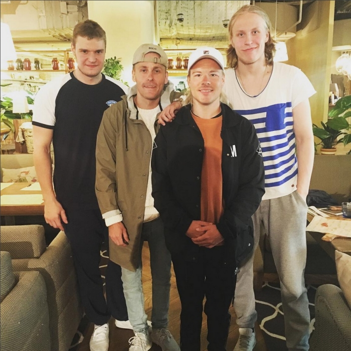
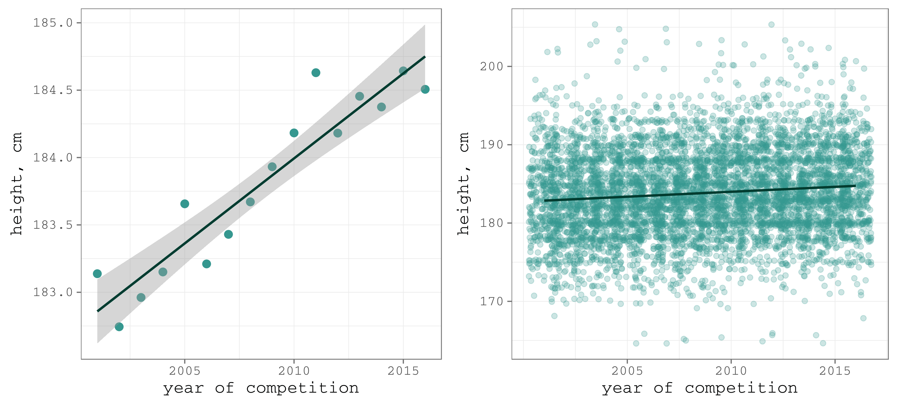
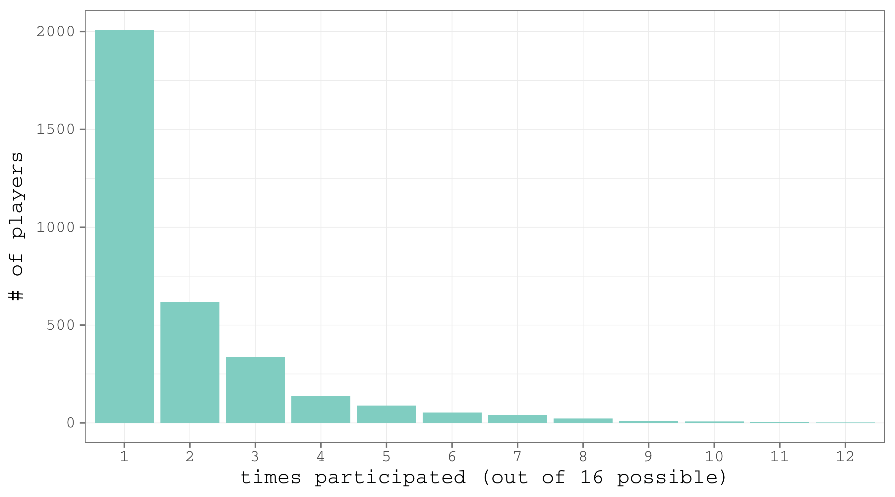
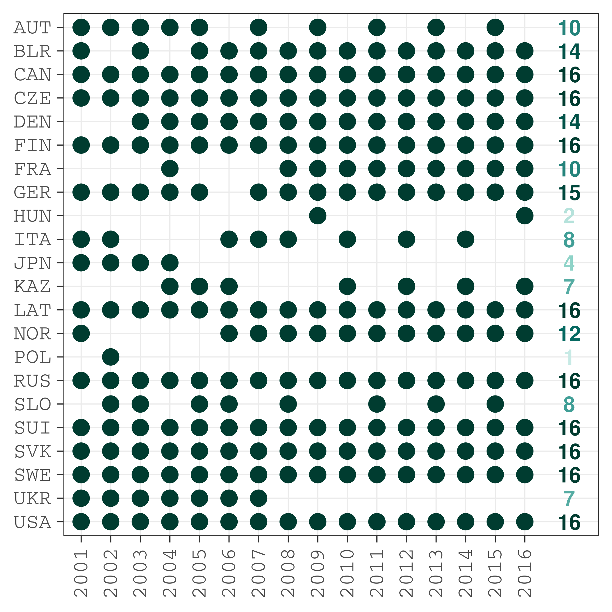
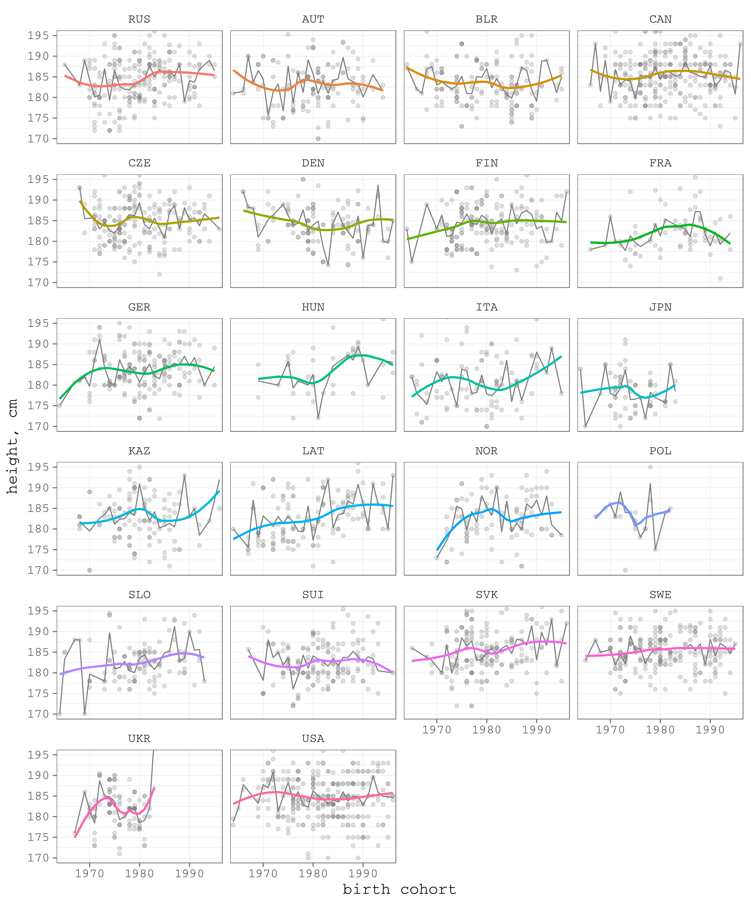
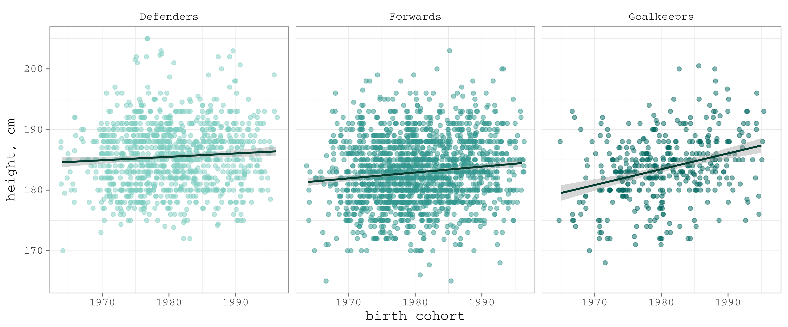
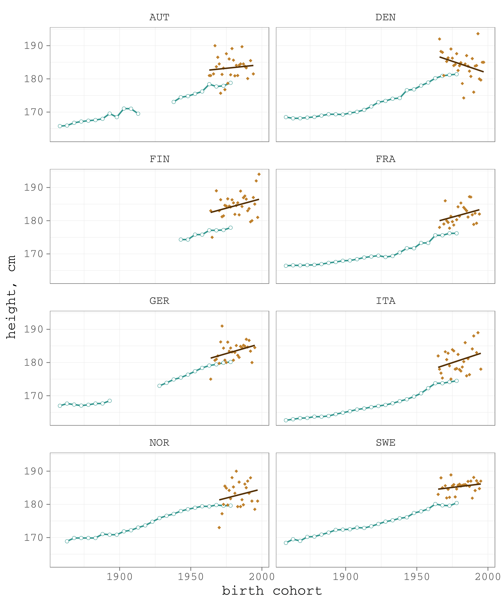
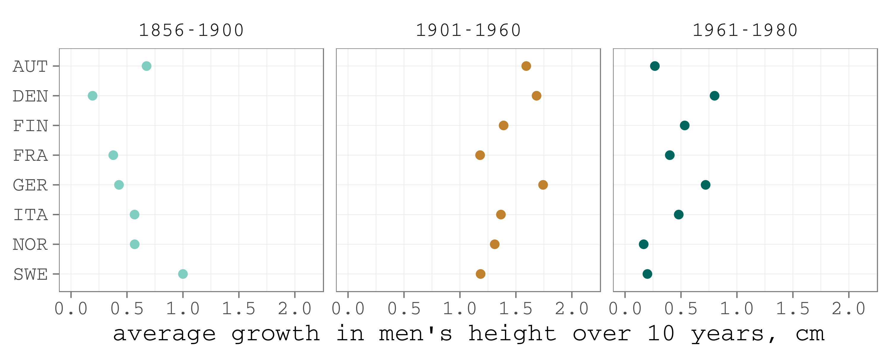
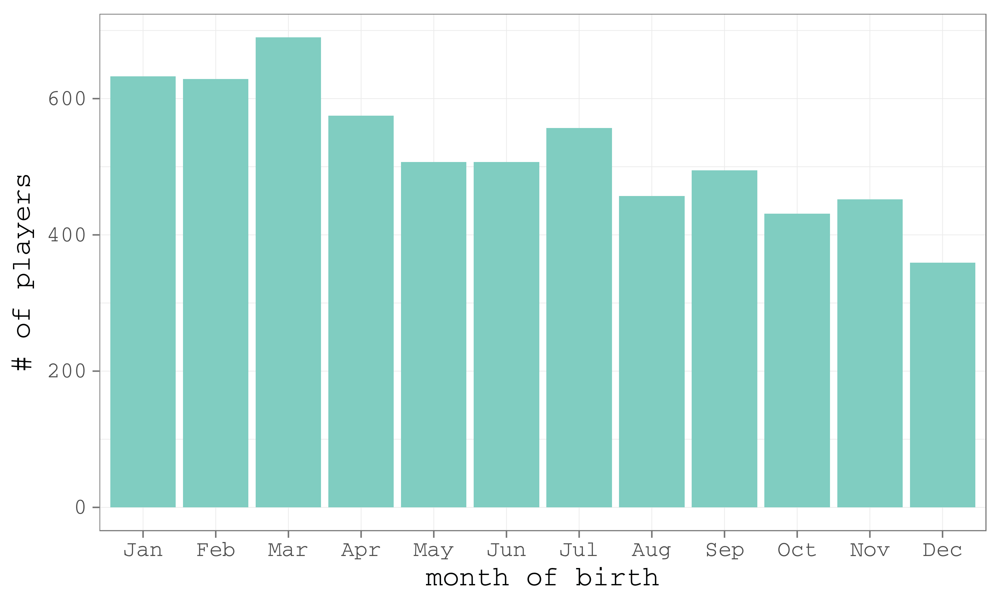
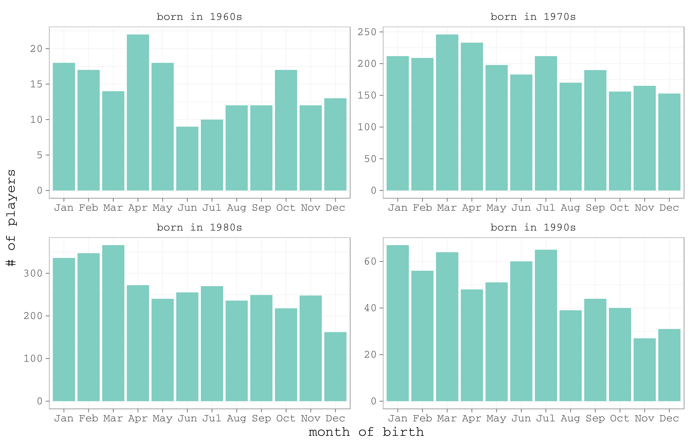

![]()
# load required packages
library(tidyverse) # data manipulation and viz
library(lubridate) # easy manipulations with dates
library(ggthemes) # themes for ggplot2
library(texreg) # easy export of regression tables
library(xtable) # export a data frame into an html table
library(sysfonts) # change the font in figures
# download the IIHF data set; if there are some problems, you can download manually
# using the stable URL (https://dx.doi.org/10.6084/m9.figshare.3394735.v2)
df <- read.csv("https://ndownloader.figshare.com/files/5303173")
# color palette
brbg11 <- RColorBrewer::brewer.pal(11, "BrBG")The 2017 Ice Hockey World Championship has started. Thus I want to share a small research on the height of ice hockey players that I did almost a year ago and published in Russian.
When the TV camera shows the players returning to the changing rooms, it is difficult not to notice just how huge the players are compared to the surrounding people – fans, journalists, coaches, or the ice arena workers. For example, here are the rising stars of the Finnish hockey – Patrik Laine and Aleksander Barkov – with the two fans in between.
Source
So the questions arise. Are ice hockey players really taller than average people? How is the height of ice hockey players evolving over time? Are there any lasting differences between countries?
Data
IIHF, the organization that is in charge for the ice hockey world championships, publishes detailed information on the squads, including the data on player’s height and weight. The raw data files are here. I gathered the data of all players that participated in the 16 world championships between 2001 and 2016. The formatting of the data files changes from year to year complicating the data processing. So I did the data cleaning manually which took a bit more than 3 hours. The unifies dataset is here. Let’s load the data and prepare the R session.
Do the players become taller? (a crude comparison)
Let’s first have a look at the pulled average height of all the players that participated.
# mean height by championship
df_per <- df %>% group_by(year) %>%
summarise(height = mean(height))
gg_period_mean <- ggplot(df_per, aes(x = year, y = height))+
geom_point(size = 3, color = brbg11[9])+
stat_smooth(method = "lm", size = 1, color = brbg11[11])+
ylab("height, cm")+
xlab("year of competition")+
scale_x_continuous(breaks = seq(2005, 2015, 5), labels = seq(2005, 2015, 5))+
theme_few(base_size = 15, base_family = "mono")+
theme(panel.grid = element_line(colour = "grey75", size = .25))
gg_period_jitter <- ggplot(df, aes(x = year, y = height))+
geom_jitter(size = 2, color = brbg11[9], alpha = .25, width = .75)+
stat_smooth(method = "lm", size = 1, se = F, color = brbg11[11])+
ylab("height, cm")+
xlab("year of competition")+
scale_x_continuous(breaks = seq(2005, 2015, 5), labels = seq(2005, 2015, 5))+
theme_few(base_size = 15, base_family = "mono")+
theme(panel.grid = element_line(colour = "grey75", size = .25))
gg_period <- cowplot::plot_grid(gg_period_mean, gg_period_jitter)
Figure 1. The dynamics of the average height of the ice hockey players at the world championships, 2001–2016
The positive trend is evident. In the 15 years the average height of a player increased by almost 2 cm (left panel). Is that a lot? To have an idea, we will compare this growth to the dynamics in the population, later in the post.
Cohort approach
A more correct way to study the dynamics of players’ height is to do the comparison between birth cohorts. Here we face an interesting data preparation issue – some of the players participated in more that one championships. The question is: do we need to clean the duplicate records? If the goal is to see the average height of a player at the certain championship (as in Figure 1), it is reasonable to keep all the records. Alternatively, if the aim is to analyze the dynamics of players’ height itself, I argue, it would be wrong to assign bigger weight to those players that participated in more that one championship. Thus, for the further cohort analysis, I cleaned the dataset from the duplicates.
dfu_h <- df %>% select(year, name, country, position, birth, cohort, height) %>%
spread(year, height)
dfu_h$av.height <- apply(dfu_h[, 6:21], 1, mean, na.rm = T)
dfu_h$times_participated <- apply(!is.na(dfu_h[, 6:21]), 1, sum)
dfu_w <- df %>% select(year, name, country, position, birth, cohort, weight) %>%
spread(year, weight)
dfu_w$av.weight <- apply(dfu_w[, 6:21], 1, mean, na.rm = T)
dfu <- left_join(dfu_h %>% select(name, country, position, birth, cohort, av.height, times_participated),
dfu_w %>% select(name, country, position, birth, cohort, av.weight),
by = c("name", "country", "position", "birth", "cohort")) %>%
mutate(bmi = av.weight / (av.height / 100) ^ 2)The total number of observations decreased from 6292 to 3333. For those who participated in more that one championship, I averaged the data on height and weight as they can change during the life-course. How many times, on average, are ice hockey players honored to represent their countries in the world championships? A bit less than 2.
# frequencies of participation in world championships
mean(dfu$times_participated)
df_part <- as.data.frame(table(dfu$times_participated))
gg_times_part <- ggplot(df_part, aes(y = Freq, x = Var1))+
geom_bar(stat = "identity", fill = brbg11[8])+
ylab("# of players")+
xlab("times participated (out of 16 possible)")+
theme_few(base_size = 15, base_family = "mono")+
theme(panel.grid = element_line(colour = "grey75", size = .25))
Figure 2. Histogram of the players by the number of times they participated in world championships over the period 2001-2016.
But there are unique players that participated in a considerable number of championships. Let’s have a look at those who participated at least 10 times out of 16 possible. There were just 14 such players.
| name | country | position | birth date | cohort | av.height | times _participated | av.weight | bmi |
|---|---|---|---|---|---|---|---|---|
| ovechkin alexander | RUS | F | 1985-09-17 | 1985 | 188.45 | 11 | 98.36 | 27.70 |
| nielsen daniel | DEN | D | 1980-10-31 | 1980 | 182.27 | 11 | 79.73 | 24.00 |
| staal kim | DEN | F | 1978-03-10 | 1978 | 182.00 | 10 | 87.80 | 26.51 |
| green morten | DEN | F | 1981-03-19 | 1981 | 183.00 | 12 | 85.83 | 25.63 |
| masalskis edgars | LAT | G | 1980-03-31 | 1980 | 176.00 | 12 | 79.17 | 25.56 |
| ambuhl andres | SUI | F | 1983-09-14 | 1983 | 176.80 | 10 | 83.70 | 26.78 |
| granak dominik | SVK | D | 1983-06-11 | 1983 | 182.00 | 10 | 79.50 | 24.00 |
| madsen morten | DEN | F | 1987-01-16 | 1987 | 189.82 | 11 | 86.00 | 23.87 |
| redlihs mikelis | LAT | F | 1984-07-01 | 1984 | 180.00 | 10 | 80.40 | 24.81 |
| cipulis martins | LAT | F | 1980-11-29 | 1980 | 180.70 | 10 | 82.10 | 25.14 |
| holos jonas | NOR | D | 1987-08-27 | 1987 | 180.18 | 11 | 91.36 | 28.14 |
| bastiansen anders | NOR | F | 1980-10-31 | 1980 | 190.00 | 11 | 93.64 | 25.94 |
| ask morten | NOR | F | 1980-05-14 | 1980 | 185.00 | 10 | 88.30 | 25.80 |
| forsberg kristian | NOR | F | 1986-05-05 | 1986 | 184.50 | 10 | 87.50 | 25.70 |
Alexander Ovechkin – 11 times! But it has to be noted that not every player had a possibility to participate in all the 16 championships between 2001 and 2016. That depends on a numder of factors:
- the birth cohort of the player; - whether his national team regularly qualified for the championship (Figure 3); - whether the player was good enough for the national team; - whether he was free from the NHL play-offs that often keep the best players off the world championships.
# countries times participated
df_cnt_part <- df %>% select(year, country, no) %>%
mutate(country = factor(paste(country))) %>%
group_by(country, year) %>%
summarise(value = sum(as.numeric(no))) %>%
mutate(value = 1) %>%
ungroup() %>%
mutate(country = factor(country, levels = rev(levels(country))),
year = factor(year))
d_cnt_n <- df_cnt_part %>% group_by(country) %>%
summarise(n = sum(value))
gg_cnt_part <- ggplot(data = df_cnt_part, aes(x = year, y = country))+
geom_point(color = brbg11[11], size = 7)+
geom_text(data = d_cnt_n, aes(y = country, x = 17.5, label = n, color = n), size = 7, fontface = 2)+
geom_text(data = d_cnt_n, aes(y = country, x = 18.5, label = " "), size = 7)+
scale_color_gradientn(colours = brbg11[7:11])+
xlab(NULL)+
ylab(NULL)+
theme_bw(base_size = 25, base_family = "mono")+
theme(legend.position = "none",
axis.text.x = element_text(angle = 90, hjust = 1, vjust = 0.5))
Figure 3. Stats of the national teams participation in the world championships
Do the ice hochey players become taller? (regression analysis)
The regression analysis allows to address the research question – the association between player’s height and birth cohort – accounting for the cross-national differences and player’s position. I use OLS regressions, that are quite sensitive to outliers. I removed the birth cohorts for which there are less than 10 players – 1963, 1997, and 1998.
So, the results. I add the variables one by one.
Dependent variable: player’s height.
Explaining variables: 1) birth cohort; 2) position (compared to defenders); 3) country (compared to Russia).
# relevel counrty variable to compare with Russia
dfuc$country <- relevel(dfuc$country, ref = "RUS")
# regression models
m1 <- lm(data = dfuc, av.height~cohort)
m2 <- lm(data = dfuc, av.height~cohort+position)
m3 <- lm(data = dfuc, av.height~cohort+position+country)
# export the models to html
htmlreg(list(m1, m2, m3), file = "models_height.html", single.row = T)| Model 1 | Model 2 | Model 3 | |
|---|---|---|---|
| (Intercept) | -10.17 (27.67) | -18.64 (27.01) | 32.59 (27.00) |
| cohort | 0.10 (0.01)*** | 0.10 (0.01)*** | 0.08 (0.01)*** |
| positionF | -2.59 (0.20)*** | -2.59 (0.20)*** | |
| positionG | -1.96 (0.31)*** | -1.93 (0.30)*** | |
| countryAUT | -0.94 (0.55) | ||
| countryBLR | -0.95 (0.53) | ||
| countryCAN | 1.13 (0.46)* | ||
| countryCZE | 0.56 (0.49) | ||
| countryDEN | -0.10 (0.56) | ||
| countryFIN | 0.20 (0.50) | ||
| countryFRA | -2.19 (0.69)** | ||
| countryGER | -0.61 (0.51) | ||
| countryHUN | -0.61 (0.86) | ||
| countryITA | -3.58 (0.61)*** | ||
| countryJPN | -5.24 (0.71)*** | ||
| countryKAZ | -1.16 (0.57)* | ||
| countryLAT | -1.38 (0.55)* | ||
| countryNOR | -1.61 (0.62)** | ||
| countryPOL | 0.06 (1.12) | ||
| countrySLO | -1.55 (0.58)** | ||
| countrySUI | -1.80 (0.53)*** | ||
| countrySVK | 1.44 (0.50)** | ||
| countrySWE | 1.18 (0.48)* | ||
| countryUKR | -1.82 (0.59)** | ||
| countryUSA | 0.54 (0.45) | ||
| R2 | 0.01 | 0.06 | 0.13 |
| Adj. R2 | 0.01 | 0.06 | 0.12 |
| Num. obs. | 3319 | 3319 | 3319 |
| RMSE | 5.40 | 5.27 | 5.10 |
Model 1. One year change in the birth cohort year is associated with an increase of 0.1 cm in height. The coefficient is statistically significant, yet the variable explains only 1% of the variance. That’s not a big problem since the aim of the modeling is to document the differences, rather than predict based on the model. Nevertheless, the low coefficient of determination means that there are other variables that explain the differences in players’ height better than just the birth cohort.
Model 2. Defenders are the tallest ice hockey players: goalkeepers are 2 cm shorter, forwards are 2.6 cm shorter. All the coefficients are significant; R squared rose to 6%. It is worth noting that the coefficient for the birth cohort did not change when we added the new variable.
Model 3. It is interesting to control for countries for two reasons. First, some of the differences are significant themselves. For example, Swedes, Slovaks, and Canadians are higher than Russians. In contrast, Japanese are 5.2 cm shorter, Italians – 3.6 cm, French – 2.2 cm (figure 4). Second, once the country controls are introduced, the coefficient for birth cohort decreased slightly meaning that some of the differences in height are explained by persisting cross-country differences. R squared rose to 13%.
# players' height by country
gg_av.h_country <- ggplot(dfuc , aes(x = factor(cohort), y = av.height))+
geom_point(color = "grey50", alpha = .25)+
stat_summary(aes(group = country), geom = "line", fun.y = mean, size = .5, color = "grey50")+
stat_smooth(aes(group = country, color = country), geom = "line", size = 1)+
facet_wrap(~country, ncol = 4)+
coord_cartesian(ylim = c(170, 195))+
scale_x_discrete(labels = paste(seq(1970, 1990, 10)), breaks = paste(seq(1970, 1990, 10)))+
labs(x = "birth cohort", y = "height, cm")+
theme_few(base_size = 15, base_family = "mono")+
theme(legend.position = "none",
panel.grid = element_line(colour = "grey75", size = .25))
Figure 4. The height of ice hockey players by nations
The last model indicates that from one birth cohort cohort to the other the height of ice hockey players increases 0.08 cm. That means an increase of 0.8 cm in a decade or a growth of 2.56 cm in the 32 years between 1964 and 1996. It is worth mentioning that once we run the analysis in cohorts and controlling for positions and nations, the speed of the player’s height increase becomes much humbler than in the crude pulled analysis (Figure 1): 0.8 cm per decade compared to 1.2 cm per decade.
Before we go further and compare the growth in player’s height to that of the population, let’s do the modeling separately for defenders, goalkeepers, and forwards. The exploratory plot (Figure 5) suggests that the correlation is stronger for goalkeepers and weaker for defenders.
dfuc_pos <- dfuc
levels(dfuc_pos$position) <- c("Defenders", "Forwards", "Goalkeeprs")
gg_pos <- ggplot(dfuc_pos , aes(x = cohort, y = av.height))+
geom_jitter(aes(color = position), alpha = .5, size = 2)+
stat_smooth(method = "lm", se = T, color = brbg11[11], size = 1)+
scale_x_continuous(labels = seq(1970, 1990, 10), breaks = seq(1970, 1990, 10))+
scale_color_manual(values = brbg11[c(8, 9, 10)])+
facet_wrap(~position, ncol = 3)+
xlab("birth cohort")+
ylab("height, cm")+
theme_few(base_size = 15, base_family = "mono")+
theme(legend.position = "none",
panel.grid = element_line(colour = "grey75", size = .25))
Figure 5. Correlation between height and birth cohort by position
# separate models for positions
m3d <- lm(data = dfuc %>% filter(position == "D"), av.height~cohort+country)
m3f <- lm(data = dfuc %>% filter(position == "F"), av.height~cohort+country)
m3g <- lm(data = dfuc %>% filter(position == "G"), av.height~cohort+country)
htmlreg(list(m3d, m3f, m3g), file = "models_height_pos.html", single.row = T,
custom.model.names = c("Model 3 D", "Model 3 F", "Model 3 G"))| Model 3 D | Model 3 F | Model 3 G | |
|---|---|---|---|
| (Intercept) | 108.45 (46.46)* | 49.32 (36.73) | -295.76 (74.61)*** |
| cohort | 0.04 (0.02) | 0.07 (0.02)*** | 0.24 (0.04)*** |
| countryAUT | 0.14 (0.96) | -2.01 (0.75)** | 0.47 (1.47) |
| countryBLR | 0.30 (0.87) | -1.53 (0.73)* | -2.73 (1.55) |
| countryCAN | 1.55 (0.78)* | 0.39 (0.62) | 3.45 (1.26)** |
| countryCZE | 0.87 (0.84) | 0.30 (0.67) | 0.63 (1.36) |
| countryDEN | -0.60 (0.95) | 0.10 (0.75) | -0.19 (1.62) |
| countryFIN | -0.55 (0.89) | -0.04 (0.67) | 2.40 (1.32) |
| countryFRA | -3.34 (1.15)** | -2.06 (0.93)* | 1.39 (2.07) |
| countryGER | 0.48 (0.85) | -1.40 (0.72) | -0.65 (1.33) |
| countryHUN | -1.32 (1.47) | -0.70 (1.16) | 0.65 (2.39) |
| countryITA | -2.08 (1.08) | -4.78 (0.82)*** | -2.02 (1.62) |
| countryJPN | -4.13 (1.26)** | -6.52 (0.94)*** | -2.27 (1.98) |
| countryKAZ | -1.23 (0.95) | -1.82 (0.79)* | 1.79 (1.58) |
| countryLAT | -0.73 (0.95) | -1.39 (0.75) | -3.42 (1.49)* |
| countryNOR | -3.25 (1.07)** | -1.06 (0.85) | -0.10 (1.66) |
| countryPOL | 0.82 (1.89) | -0.58 (1.55) | 0.37 (2.97) |
| countrySLO | -1.57 (0.99) | -1.54 (0.79) | -2.25 (1.66) |
| countrySUI | -1.98 (0.91)* | -2.36 (0.71)*** | 1.12 (1.47) |
| countrySVK | 2.94 (0.87)*** | 0.81 (0.67) | -0.70 (1.50) |
| countrySWE | 0.75 (0.81) | 1.24 (0.65) | 1.37 (1.33) |
| countryUKR | -1.37 (1.01) | -1.77 (0.80)* | -3.71 (1.66)* |
| countryUSA | 0.76 (0.78) | -0.08 (0.62) | 2.58 (1.26)* |
| R2 | 0.09 | 0.10 | 0.24 |
| Adj. R2 | 0.07 | 0.09 | 0.20 |
| Num. obs. | 1094 | 1824 | 401 |
| RMSE | 5.08 | 5.08 | 4.87 |
The separate modeling shows that the average height of ice hockey players, that were born in 1964-1996 and participated in the world championships in 2001–2016, increased with the speed of 0.4 cm per decade for defenders, 0.7 cm – for forwards, and (!) 2.4 cm – for goalies. In three decades the average height of the goalkeepers increased by 7 cm!
Finally, let’s compare these dynamics with those in the population.
Compare to population
Our previous results expose significant height differences between players of various nations. Thus, it is reasonable to compare ice hockey players’ height to the corresponding male population of their countries.
For the data on the height of males in population in the corresponding nations I used the relevant scientific paper. I grabbed the data from the paper PDF using a nice little tool – tabula – and also deposited on figshare.
# download the data from Hatton, T. J., & Bray, B. E. (2010).
# Long run trends in the heights of European men, 19th–20th centuries.
# Economics & Human Biology, 8(3), 405–413.
# http://doi.org/10.1016/j.ehb.2010.03.001
# stable URL, copied data (https://dx.doi.org/10.6084/m9.figshare.3394795.v1)
df_hb <- read.csv("https://ndownloader.figshare.com/files/5303878")
df_hb <- df_hb %>%
gather("country", "h_pop", 2:16) %>%
mutate(period = paste(period)) %>%
separate(period, c("t1", "t2"), sep = "/")%>%
transmute(cohort = (as.numeric(t1)+as.numeric(t2))/2, country, h_pop)
# calculate hockey players' cohort height averages for each country
df_hoc <- dfu %>% group_by(country, cohort) %>%
summarise(h_hp = mean(av.height)) %>%
ungroup()Unfortunately, our dataset on ice hockey players intersects with the data on population only for 8 countries: Austria, Denmark, Finland, France, Germany, Italy, Norway, and Sweden.
gg_hoc_vs_pop <- ggplot()+
geom_path(data = df_hb %>% filter(country %in% both_cnt),
aes(x = cohort, y = h_pop),
color = brbg11[9], size = 1)+
geom_point(data = df_hb %>% filter(country %in% both_cnt),
aes(x = cohort, y = h_pop),
color = brbg11[9], size = 2)+
geom_point(data = df_hb %>% filter(country %in% both_cnt),
aes(x = cohort, y = h_pop),
color = "white", size = 1.5)+
geom_point(data = df_hoc %>% filter(country %in% both_cnt),
aes(x = cohort, y = h_hp),
color = brbg11[3], size = 2, pch = 18)+
stat_smooth(data = df_hoc %>% filter(country %in% both_cnt),
aes(x = cohort, y = h_hp),
method = "lm", se = F, color = brbg11[1], size = 1)+
facet_wrap(~country, ncol = 2)+
labs(y = "height, cm", x = "birth cohort")+
theme_few(base_size = 20, base_family = "mono")+
theme(panel.grid = element_line(colour = "grey75", size = .25))
Figure 6. The comparison of height dynamics in ice hockey players (brown) and the corresponding male populations (green)
In all the analyzed countries, ice hockey players are 2-5 cm higher that the nation’s average. This is not very surprising since we expect some selection in sport. What is more interesting, in the developed countries the rapid increase in the height of males mostly leveled off in the birth cohorts of 1960s. Unlike the population trend, the height of ice hockey players continued to increase with roughly the same pace in all the analyzed countries except for Denmark.
For the cohorts of Europeans that were born in first half of 20-th century, the height of males increased by 1.18–1.74 cm per decade (Figure 7, middle panel). Starting from the birth cohorts of 1960s, the pace decreased to 0.15–0.80 per decade.
# growth in population
df_hb_w <- df_hb %>% spread(cohort, h_pop)
names(df_hb_w)[2:26] <- paste("y", names(df_hb_w)[2:26])
diffs <- df_hb_w[, 3:26]-df_hb_w[, 2:25]
df_hb_gr<- df_hb_w %>%
transmute(country,
gr_1961_1980 = unname(apply(diffs[, 22:24], 1, mean, na.rm = T))*2,
gr_1901_1960 = unname(apply(diffs[, 9:21], 1, mean, na.rm = T))*2,
gr_1856_1900 = unname(apply(diffs[, 1:8], 1, mean, na.rm = T))*2) %>%
gather("period", "average_growth", 2:4) %>%
filter(country %in% both_cnt) %>%
mutate(country = factor(country, levels = rev(levels(factor(country)))),
period = factor(period, labels = c("1856-1900", "1901-1960", "1961-1980")))
gg_hb_growth <- ggplot(df_hb_gr, aes(x = average_growth, y = country))+
geom_point(aes(color = period), size = 3)+
scale_color_manual(values = brbg11[c(8, 3, 10)])+
scale_x_continuous(limits = c(0, 2.15))+
facet_wrap(~period)+
theme_few()+
xlab("average growth in men's height over 10 years, cm")+
ylab(NULL)+
theme_few(base_size = 20, base_family = "mono")+
theme(legend.position = "none",
panel.grid = element_line(colour = "grey75", size = .25))
Figure 7. Average changes in male population
The height increase for ice hockey players seems quite impressive if we compare it to the stagnating dynamics in the corresponding male populations. And the acceleration of goalkeepers’ height is outright amazing.
The diverging trends in the height of ice hockey players and normal population is likely to be driven by the strengthening selection in sport.
Selection in ice hockey
Looking through the literature on the selection in sport, I saw the finding that showed a notable disproportion of professional sportsmen by the month of birth. There are much more sportsmen that were born in the first half of the year. They have a lasting advantage since the kids teams are usually formed by birth cohorts. Thus, those born earlier in the year always have a bit more time lived compared to their later born team mates, which means that they are physically more mature. It is easy to test the finding on our ice hockey players dataset.
# check if there are more players born in earlier months
df_month <- df %>% mutate(month = month(birth)) %>%
mutate(month = factor(month))
gg_month <- ggplot(df_month, aes(x = factor(month)))+
geom_bar(stat = "count", fill = brbg11[8])+
scale_x_discrete(breaks = 1:12, labels = month.abb)+
labs(x = "month of birth", y = "# of players")+
theme_few(base_size = 20, base_family = "mono")+
theme(legend.position = "none",
panel.grid = element_line(colour = "grey75", size = .25))
Figure 8. The distribution of ice hockey players by month of birth
True, the distribution is notably skewed – there are much more players born in earlier months. When I further split the dataset by the decades of birth, it becomes clear that the effect becomes more evident with time (Figure 9). Indirectly, that means that the selection in ice hockey becomes tougher.
# facet by decades
df_month_dec <- df_month %>%
mutate(dec = substr(paste(cohort), 3, 3) %>%
factor(labels = paste("born in", c("1960s", "1970s", "1980s", "1990s"))))
gg_month_dec <- ggplot(df_month_dec, aes(x = factor(month)))+
geom_bar(stat = "count", fill = brbg11[8])+
scale_x_discrete(breaks = 1:12, labels = month.abb)+
labs(x = "month of birth", y = "# of players")+
facet_wrap(~dec, ncol = 2, scales = "free")+
theme_few(base_size = 20, base_family = "mono")+
theme(legend.position = "none",
panel.grid = element_line(colour = "grey75", size = .25))
Figure 9. The distribution of ice hockey players by month of birth – separately by decades of birth
The full R script can be downloaded here